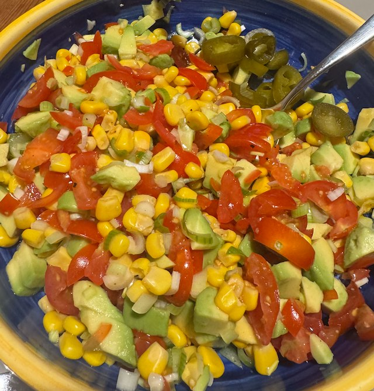

Avocado and Sweetcorn Salsa

Serves: 4
Cook Time: 20 min
Ingredients
- 1 lime, juiced
- 1 avocado, peeled, stoned and diced
- 200g tin sweetcorn, drained
- 2 tomato, chopped
- 4 spring onions, chopped
- jalapeno chillies, from jar
- salt
Method
Juice lime into bowl, then prepare avocado adding to the lime, to stop browning.
Add the rest of the ingredients and mix. Taste for salt.